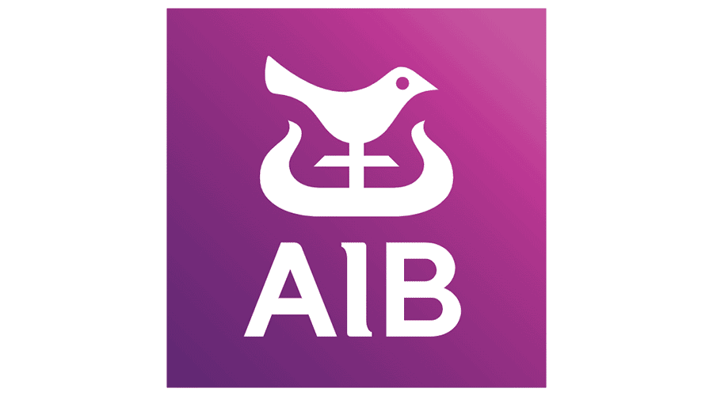

James Fulham
Fixing Cost, Management & Execution Problems
Former €200M+ P&L leader. 25+ years solving underperformance.
087-2270463Common Problems I Help Fix
- "Busy but margins are tight?" Identify where profit is leaking and fix it with verified numbers.
- "Costs keep rising and can't get control?" Reset the cost base properly — targeted structural fixes, not blunt cuts.
- "Managers aren't aligned or accountable?" Clarify roles, install meaningful KPIs, and put simple routines in place that stick.
- "Need to grow but operations are stretched." Increase throughput before adding headcount or complexity.
- "Investing but returns are unclear." Prioritise capital properly and stop funding weak projects.
- "Board wants results quickly." Stabilise performance first, then build sustainable improvement.
Experience
- €200M+ manufacturing P&L leadership
- €15M working capital release
- €13M cost-reduction pipeline delivered across multi-site group
- $1Bn global cost governance responsibility (EMEA, US, APJ)
- 5,000 → 3,000 FTE restructuring programme
Selected Organisations


